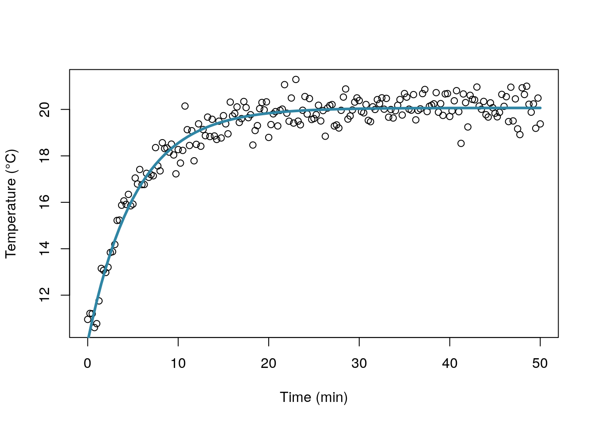

Non linear regression with nls()
November 18, 2018


Context
Last week, I was discussing about how to use nls() for a specific
model with one of my colleague and I ended creating a piece of code to
show what I was talking about! Even though there are many posts exploring nls()
in more depth that I did (for instance this post on datascienceplus by Lionel Herzog),
I thought I could share these lines of command here!
Basically, we were talking about a model where the temperature (\(T\)) follows a saturation curve starting from 10°C at t=0 (so T(0) = 10) and plateauing at \(T_{\inf}\).
\[T(t) = T_{\inf} - (T_{\inf} - T_0)\exp(-kt)\]
Goal and data
The goal here is to use nls() (Nonlinear Least Squares) to find \(k\) and \(T_{inf}\).
For the sack of clarity, I simulate the data, i.e. I use the saturation curve
with known parameter values, then I add some noise (here a white noise):
library(magrittr)
# Parameters
## known
T0 = 10
## the ones we are looking for
k = 0.2
Tinf = 20
# Simulate data
## time
seqt <- seq(0, 50, .25)
## create a data frame
simdata <- cbind(
seqt = seqt,
sim = Tinf - (Tinf- T0)*exp(-k*seqt) + .5*rnorm(length(seqt))
) %>% as.data.frame
head(simdata)
#R> seqt sim
#R> 1 0.00 10.95667
#R> 2 0.25 11.21328
#R> 3 0.50 11.20083
#R> 4 0.75 10.60456
#R> 5 1.00 10.77357
#R> 6 1.25 11.75301Use nls()
Now I call nls() to fit the data:
res <- nls(sim ~ Tinf - (Tinf - 10)*exp(-k*seqt), simdata, list(Tinf = 1, k = .1))All the information needed are stored in res and display via the print method:
res
#R> Nonlinear regression model
#R> model: sim ~ Tinf - (Tinf - 10) * exp(-k * seqt)
#R> data: simdata
#R> Tinf k
#R> 20.0651 0.1895
#R> residual sum-of-squares: 54.41
#R>
#R> Number of iterations to convergence: 8
#R> Achieved convergence tolerance: 3.92e-06Let’s draw a quick plot:
## get the coefficients values
cr <- coef(res)
fitC <- function(x) cr[1] - (cr[1] - 10)*exp(-cr[2]*x)
plot(simdata[,1], simdata[,2], xlab = "Time (min)", ylab = "Temperature (°C)")
curve(fitC, 0, 50, add = TRUE, col = "#2f85a4", lwd = 3)